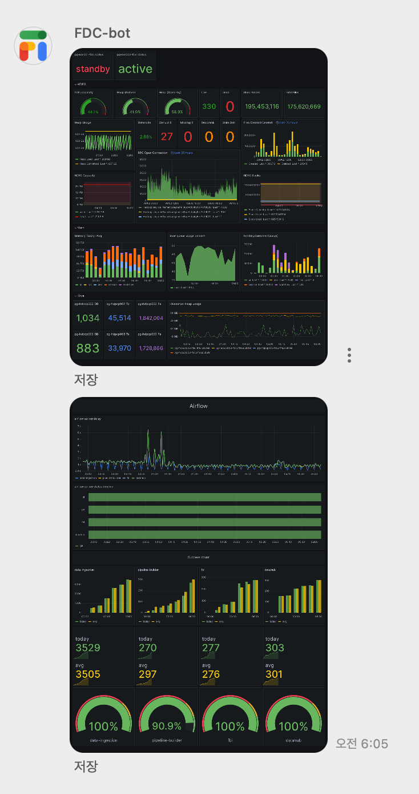
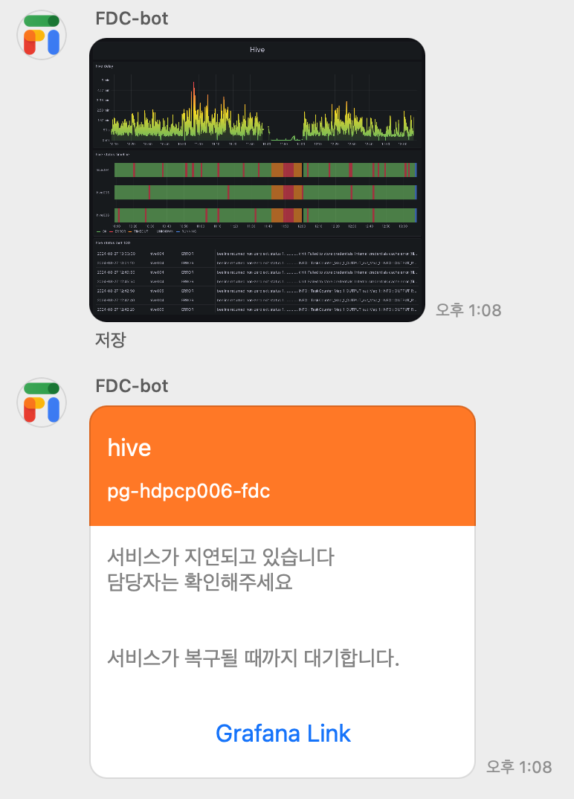
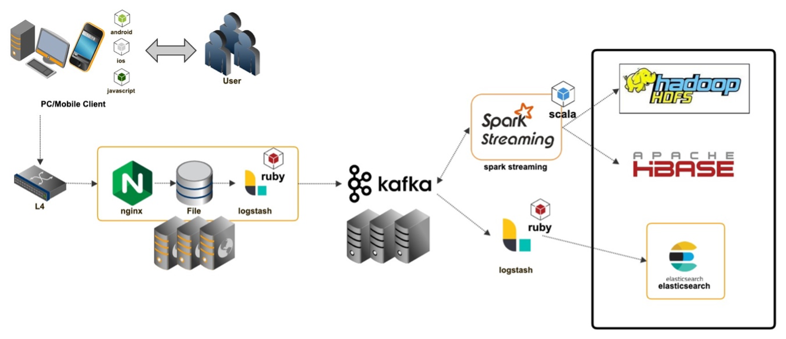

About Me
안녕하세요, 빵을 사랑하는 15년차 개발자 이응완입니다.
백엔드 개발자로 시작해 모바일 앱 개발을 거쳐 현재는 데이터 엔지니어로 활동하고 있습니다.
효율성을 높이는 자동화 툴과 확장 가능한 코드 개발에 열정을 쏟고 있으며,
ETL 및 데이터 파이프라인 구축에서 깊은 전문성을 보유하고 있습니다.
Java, JavaScript, Python, Swift, Scala, Objective-C 언어에 익숙하며,
Kafka, Hadoop, Spark, Hive를 포함한 iOS와 Android 플랫폼을 활용합니다.
Experience
금융을 넓히는 기술, 네이버페이
- Data ingestion 개발 및 고도화
- 개인정보 보호를 위한 데이터 익명화
- Spark table merge 엔진 개발 및 고도화
- 하둡 운영 및 장애 대응
- nbase-t CDC 전환 프로젝트
- 데이터 파기 프로세스 개선
- Zeppelin 고도화
- Hadoop ecosystem 모니터링 및 운영 자동화
- 전사 로그 수집 및 로그 마트 제공
국내 최초의 소셜 커머스
- 로그 수집 시스템 개편
- Google Analytics 대체 로그 수집 시스템 구축
- 고객 행동 기반 실시간 추천 시스템 개발
Mobile Enterprise Application Platform
- MEAP (Mobile Enterprise Application Platform) 제품 개발 iOS & Window 8 메인개발자
- web전용 그룹웨어를 iOS/Android/Window8 용으로 개발 배포
- 외부 프로젝트 지원(도시철도, IBK 스마트 알림 시스템 등)
에이이스지코리아
Backend API Developer &
Mobile App Developer(iOS)
2008.12. ~ 2011.11.
금융사 모바일용 API 개발
- 교보생명 모바일 영업지원 시스템 구축
- LIG 모바일 영업 지원 시스템 구축
- DB손해보험 보상 모바일 시스템 리뉴얼
- 더케이 손해보험 보상 모바일 구축
- 삼성화재 모바일 포탈 구축
Projects
Hadoop Ecosystem 모니터링 및 운영 자동화 (fdc-guardians)
네이버 파이낸셜
- Description
fdc-guardians는 FDC의 핵심 컴포넌트 안정성과 신뢰성을 보장하기 위한 모니터링 및 자동화 도구입니다.Airflow의Task로 실행되며, 하루 동안 유지되고 내부cron스케줄에 따라 정해진 시간에 작업을 수행합니다.- 수집된 데이터를
MySQL에 저장하고, 이상 상태 지속 시 알림 발송과 컴포넌트 재시작 및 복구를 자동화합니다. Grafana로 시간별 이상 추적을 위한 대시보드를 구성했습니다.-
모니터링 대상:
Airflow, Hive, Kafka-Connect, Zookeeper, Zeppelin, Trino - 
- What I Did
fdc-guardians설계 및 구현
- Tech Stack
Python, MySQL, Grafana, Docker, Airflow, YAML
nBase-T CDC 전환 프로젝트
네이버 파이낸셜
- Description
nBase-T는MySQL기반의 네이버 내부 분산 DB 플랫폼으로, 데이터 분산 및 리밸런싱을 통해 스케일 아웃을 지원합니다.- CDC (Change Data Capture) 기능을 활용해 기존 배치 방식에서 실시간 데이터 처리로 전환하는 프로젝트입니다.
- 데이터 변경 시
Kafka로 produce하고,Kafka-Connect로 consume하여 데이터 처리.
- What I Did
- CDC 데이터 입수 프로세스 설계
- consume한 데이터를 실제 테이블로 업데이트하는 로직 개발
- Tech Stack
Python, Hive, HDFS, Docker, Airflow, YAML
Data Ingestion 개발 및 고도화
네이버 파이낸셜
- Description
- 데이터 수집 및 변환, 저장하는
Airflow데이터 입수 로직의 개선 및 고도화
- 데이터 수집 및 변환, 저장하는
- What I Did
DAG내Task수를 50% 줄여Airflow부하 감소- 시각적 식별을 위해
Task단계별 색상을 추가해 사용자 경험 향상 Task정보 확인을 위해Rendered기능을 확장하여 효율성 증대YAML로딩 속도를 40% 개선하여 빠른 작업 수행 지원
- Tech Stack
Python, Docker, Airflow, YAML
Zeppelin 고도화
네이버 파이낸셜
- Description
- Zeppelin의 고도화를 통해 사용자 경험을 극대화하는 프로젝트
- What I Did
- Docker 빌드 및 배포 환경을 구축해 애플리케이션의 이식성과 확장성 강화
- Notebook 관리 배치를 개발해 백업, 복구, 최적화를 구현
- JMX 적용 및 Grafana 대시보드 구성
- Tech Stack
Java, Python, Docker
Table Merge 로직 개발 (with Spark)
네이버 파이낸셜
- Description
- 운영 중인 Hive의 Compactor 버그로 인해 정상 작동하지 않아 Spark를 사용해 테이블 업데이트용 Merge 로직 개발
- What I Did
- Hive의 ORC Bucket을 직접 구현해 최적화된 Table Merge 로직을 구축
- External Table을 사용해 다른 Spark 애플리케이션이 전처리 없이 사용할 수 있도록 구성
- Tech Stack
Spark, Docker, Scala
로그 수집 시스템 개편
티몬
- Description
- 기존 Text Base 로그를 Avro 형태로 변환하여 Kafka에 produce, KStream을 사용한 실시간 집계 데이터 생성
- What I Did
- http → Spring Framework → Avro 변환 → Kafka로의 로그 수집 및 Parser 개발 (Schema Registry 사용)
- Kafka Producer 및 Structured Streaming 기반 Consumer 개발
- Spark Streaming과 HBase 기반 개인화 추천 시스템 구조를 Kafka Streams로 개선
- Tech Stack
Kafka, Schema Registry, Kafka Streams, Spark Structured Streaming
Google Analytics 대체 로그 수집 시스템 구축 (Tmon Analytics)
티몬
- Description
- Client (iOS, Android) 로그 수집 후 가공 및 저장을 위한 데이터 파이프라인 구축
- What I Did
- 데이터 모델링 및 iOS/Android 데이터 수집 SDK 설계 및 개발
-
Kibana 기반 트래픽 대시보드 개발
- 
- Tech Stack
Swift, Java, Kotlin, Scala, iOS, Android, Kafka, Spark, Spark Streaming, Elasticsearch
MEAP (Mobile Enterprise Application Platform) 제품 개발
https://uracle.co.kr/morpheus-suite/hybridapp/유라클
- Description
- Multi Platform, Multi Device 환경에서 모바일 애플리케이션의 개발, 빌드, 배포, 관리를 지원하는 플랫폼 개발
- What I Did
- iOS 및 Windows 8 클라이언트용 하이브리드 플랫폼 설계 및 개발
- 웹뷰와 네이티브간의 인터페이스 개발
- 리소스 암복호화(AES128)
- 리소스 업데이트
- 화면 이동(ViewController Base)
- 데이터 처리
- 파일 송수신(http multipart / ftp)
- 데이터 네트워크( http / socket )
- 로컬 데이터 베이스
- 센서 컨트롤
- Push Notification
- 각종 디바이스 기능 컨트롤(SMS/동영상/사진 등)
- iOS 및 Windows 8 플랫폼 업데이트 및 버그 수정
- 라이선스 발급 웹 서비스 및 플러그인 개발
- 보안 키패드
- 전자 서명
- iOS 및 Windows 8 클라이언트용 하이브리드 플랫폼 설계 및 개발
- Performance
- 현대/기아차 그룹 모바일 표준 플랫폼 선정
- 장관상 - 신 소프트웨어 상품 대상(2013.10)
- Tech Stack
Java (Web/Android), Objective-C, HTML5, JavaScript
Skill
현재 업무에 사용중 혹은 사용했던 기술들입니다.
Backend
- Languages: Python, Java, Scala, Kotlin
- Data Processing: Spark, Hive, Hadoop
- APIs & Frameworks: Django, Flask
DevOps
- Infrastructure & Automation: Docker, Kubernetes, Ansible
- Monitoring & Logging: Grafana, Prometheus, ELK Stack
- Scripting: Shell, Python
- Streaming & Messaging: Kafka
- Nginx
- Linux Centos
Mobile Platforms
- iOS: Swift, Objective-C
- Android: Java, Kotlin